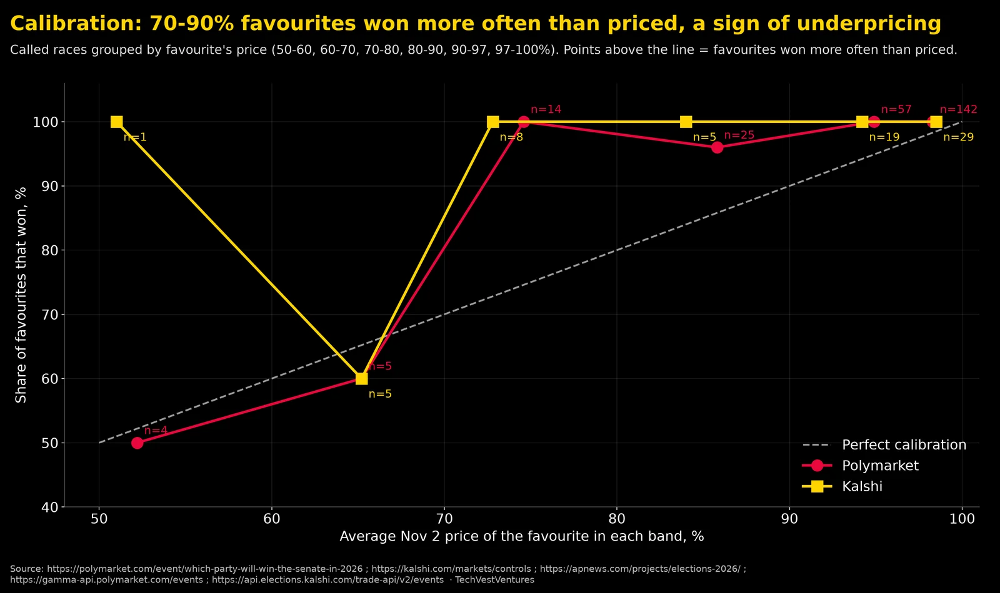
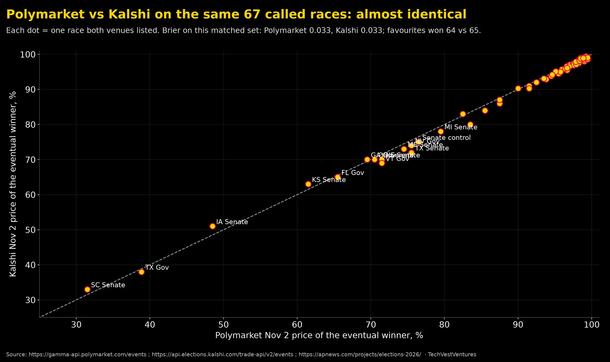
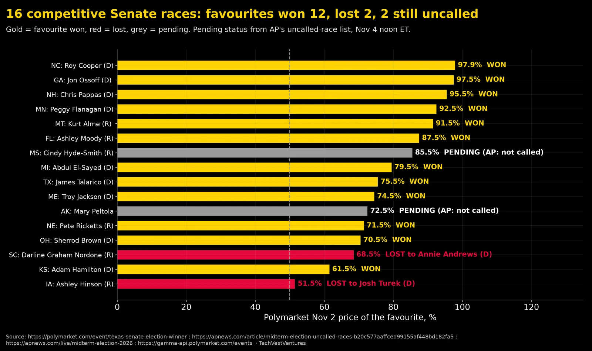

How well prices matched outcomes, and Polymarket against Kalshi on the same races. Samples in the low-price bands are tiny (1 to 5 races).

Calibration: 70-90% favourites won more often than priced, a sign of underpricing. In the 70-90% bands favourites won nearly every time, so the markets were, if anything, under-confident there. Bins below 70% hold only 1-5 races each, too few to say anything about calibration. [Data: Nov 2-4, 2026]
Source: https://polymarket.com/event/which-party-will-win-the-senate-in-2026 https://kalshi.com/markets/controls https://apnews.com/projects/elections-2026/ https://gamma-api.polymarket.com/events https://api.elections.kalshi.com/trade-api/v2/events
Polymarket vs Kalshi on the same 67 called races: almost identical. On the 67 called races both venues listed, prices sat within a few points of each other. The only split favourite was Iowa Senate (Polymarket Hinson 51.5%, Kalshi Turek 51%). The Brier gap (0.033 vs 0.033) is too small to rank them. [Data: Nov 2-4, 2026]
Source: https://gamma-api.polymarket.com/events https://api.elections.kalshi.com/trade-api/v2/events https://apnews.com/projects/elections-2026/
16 competitive Senate races: favourites won 12, lost 2, 2 still uncalled. Of the 16 Senate races TVV tracked as competitive, Polymarket's favourite won 12 and lost 2 (Iowa, South Carolina). Alaska and Mississippi are still being counted, and each is a few hundred votes or fewer apart. [Data: Nov 2-4, 2026]
Source: https://polymarket.com/event/texas-senate-election-winner https://apnews.com/article/midterm-election-uncalled-races-b20c577aaffced99155af448bd182fa5 https://apnews.com/live/midterm-election-2026 https://gamma-api.polymarket.com/events